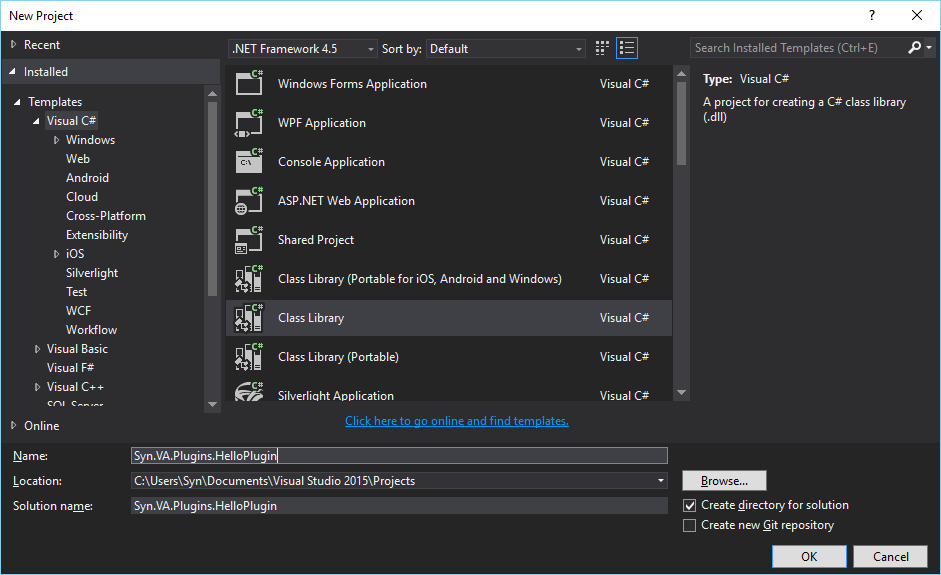
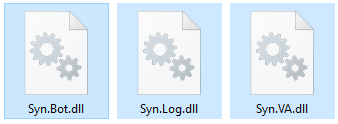
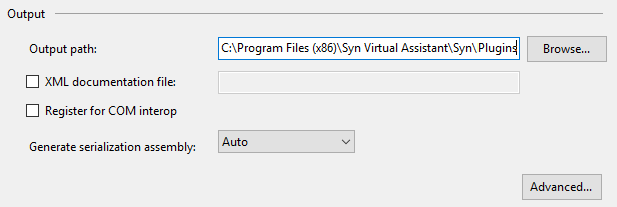
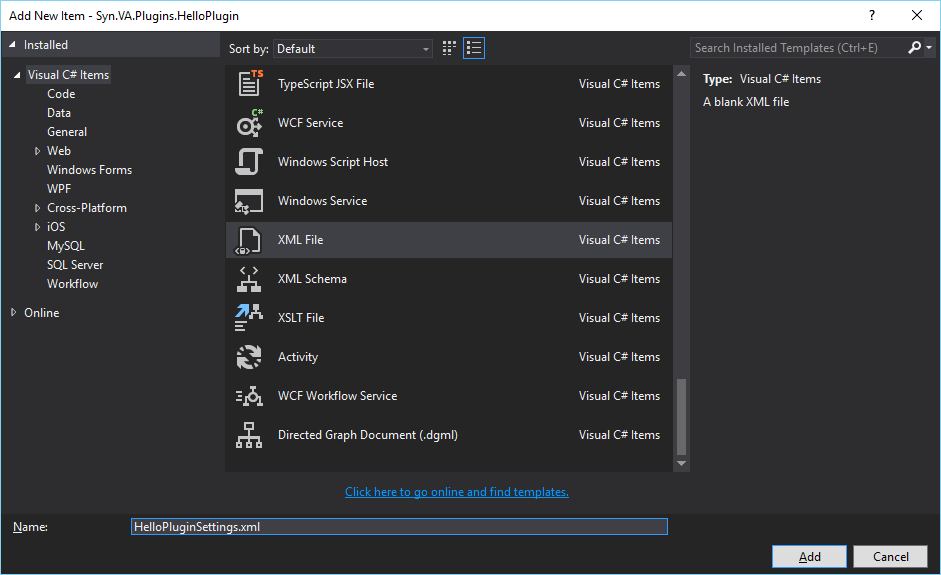
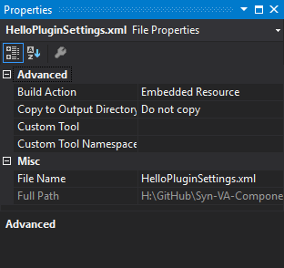
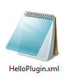

Creating a custom VA Plugin
Creation of a Plugin for VA Framework gets a lot easier due to the availability of in-built classes and utilities. For the creation of a VA Plugin, we'll assume that you are using Visual Studio Community 2015 and have good knowledge of C# coding.
Requirements
You'll need to ensure that the following requirements are met in their entirety before you start developing your custom VA Plugin.
- Syn Virtual Assistant 8.5 or above.
- Syn Bot Studio
- Visual Studio Community 2015 or above.
Custom Plugin
Creating a Class Library project
All VA Plugins are Class Libraries that are loaded by the Loader plugin during VA initialization.
To create a Class Library project, start Visual Studio
- On the menu bar choose File, New, Project.
- Expand Installed, expand Templates, expand Visual C# and then choose Class Library.
- In the Name box, type Syn.VA.Plugins.HelloPlugin and choose OK.

Referencing the VA Libraries
Once the project is created, you'll need to reference a few class libraries.
You can find these libraries in Syn\Dependencies folder in the installation directory of Syn Virtual Assistant or you can visit the online Syn-VA-Components repository and download the References folder.
After the you have downloaded the References folder, switch to Visual Studio,
- In Solution Explorer, right-click on the References node and choose Add Reference.
- Click on Browse, browse to the
Referencesfolder, selectSyn.VA.dll,Syn.Bot.dllandSyn.Log.dll.  - Click on Add and then hoose OK.
You now have all the libraries referenced to create your first plugin.
HelloPlugin class
To create a class that is loaded as a Plugin type it is important to derive the class from either the Plugin class or implement the IPlugin interface.
- Rename
Class1toHelloPlugin. - Inherit from
Plugin
namespace Syn.VA.Plugins.HelloPlugin
{
public class HelloPlugin : Plugin
{
}
}
Only
publicclasses that inherit thePluginclass fromSyn.VAlibrary are loaded by theLoaderplugin.
Creating an SIML Adapter
To know what an SIML Adapter is please refer Creating a custom Adapter in Syn Bot tutorials section.
- Right click the project name in Solution Explorer, point to Add and then click New Folder.
- Rename the New Folder to Adapter.
- Right clicck the folder, point to Add and then choose Class.
- Name the class HelloAdapter.
Once the HelloAdapter class has been created we'll need to implement the IAdapter interface present in the Syn.Bot library.
class HelloAdapter : IAdapter
{
}
Next we'll implement the Properties and Methods of the IAdapter interface as shown below.
class HelloAdapter : IAdapter
{
public XName TagName => SimlSpecification.Namespace.X + "Hello";
public bool IsRecursive => true;
public string Evaluate(Context context)
{
return "Hello Plugin says Hello!";
}
}
In the above code the TagName is the SIML tag that will later be used in an SIML Knowledge base. The above adapter just returns the string "Hello Plugin says Hello".
Now that the adapter is ready switch to HelloPlugin class and add the following code in the class constructor.
SimlBot.Instance.Adapters.Add(new HelloAdapter());
The overall code for the HelloPlugin class should look like the following.
using Syn.Bot.Siml;
using Syn.VA.Plugins.HelloPlugin.Adapter;
namespace Syn.VA.Plugins.HelloPlugin
{
public class HelloPlugin : Plugin
{
public HelloPlugin()
{
SimlBot.Instance.Adapters.Add(new HelloAdapter());
}
}
}
The
SimlBot.Instanceis the mainSimlBotinstance that is used by all plugins.
Placing the Plugin
- In Solution Explorer, right click the project name and Properties.
- Under Build option, scroll down to Output Path and choose Browse.
- Browse to
Syn/Pluginsfolder found in the root directory of Syn Virtual Assistant installation and then choose Select Folder.

- On the menu bar, choose Build and then choose Build Solution.
Add command to Knowledge-Base
For the purpose of testing the newly created we'll need to a add atleast one command in the Bot's knowledge-base to trigger the evaluation of the HelloAdapter.
- Open Syn Bot Studio, choose Open and choose Project.
- Browse to
Syn/Botdirectory under the directory where Syn Virtual Assistant is installed. - Select
Commands.simlprojand choose Open. - On the right File Explorer, right click and choose Add New File.
- Enter
HelloPluginas the file name and choose OK.
Under the newly created SIML _Concept add the following SIML Model and also add xmlns:x="http://syn.co.in/2014/siml#external" to the root Siml element.
<Model>
<Pattern>Hello Plugin</Pattern>
<Response>
<x:Hello />
</Response>
</Model>
The over SIML code should look like the following.
<Siml xmlns:x="http://syn.co.in/2014/siml#external">
<Concept Name="HelloPlugin">
<Model>
<Pattern>Hello Plugin</Pattern>
<Response>
<x:Hello />
</Response>
</Model>
</Concept>
</Siml>
Press Ctrl+S to save the code to file and close Bot Studio.
Testing the custom HelloPlugin
Launch Syn Virtual Assistant and in the Input Box type "Hello Plugin". The VA should respond "Hello Plugin says Hello!".
You have now successfully created your first plugin for Syn Virtual Assistant.
Plugin Settings File
The Loader plugin during Virtual Assistant initialization checks if a plugin class has an embedded XML file as resource with a name that matches the Name property of the plugin itself.
Creating an Embedded XML File
- In Solution Explorer, right click the project name, point to Add and click New Item.
- Scroll down and select XML File.
- Name the file
HelloPluginSettings.xmland choose Add.

- In Solution Explorer, right click
HelloPluginSettings.xmland choose Properties. - In File Properties, under Build Action select Embedded Resource

- In Solution Explorer, double-click
HelloPluginSettings.xmlto edit the new XML file. - Replace the default xml template with the following code.
<?xml version="1.0" encoding="utf-8" ?>
<Settings>
<Item Name="SomeName" Value="SomeValue" />
</Settings>
- On the menu bar, choose Build and then choose Build Solution.
- Launch Syn Virtual Assistant and browse to the Plugins folder in Syn Virtual Assistant installation directory.
- You'll see the new settings file present.

The Loader during plugin scan checks if a plugin's settings file is present in the Syn/Settings directory. If the file is not present the Loader automatically copies the Embedded Resource file to the Settings directory.
Setting File name
In the above project the actual settings file name in the Solution Explorer was HelloPluginSettings.xml. However, the file copied to the Settings directory by the Loader is named HelloPlugin.xml. This is because the Loader only considers the Plugin.Name property to create the settings file.
If the Name property of a Plugin class is overriden, the new value is used to create the Settings File.
For Example
public override string Name => "Hello";
Then the new settings file name created by the Loader in the Settings directory would be Hello.xml.